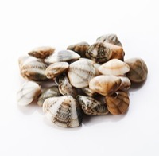

あさり（浅蜊）の漁獲量 都道府県ランキング
1位から3位までと、とれた量
あさりが日本でいちばん多くとれるのは北海道です。1,556 tで、全国（4,439 t）の35%を占めます。

| 順位 | 都道府県 | 漁獲量 | 全国に占める割合 |
|---|---|---|---|
| 1位 | 北海道 | 1,556 t | 35% |
| 2位 | 愛知県 | 1,057 t | 24% |
| 3位 | 福岡県 | 1,011 t | 23% |
この数字について
- 分類：貝の仲間
- 全国の漁獲量：4,439 t
- この数字が表すもの：漁獲量（海でとった重さ。養殖は含みません）
- 調査：海面漁業生産統計調査（海面漁業） 令和6年
- 16県分を調査（調査していない県は順位に入りません）
あさりの漁獲量について、よくある質問
- あさりの漁獲量が日本一の都道府県はどこですか？
- 北海道です。海面漁業生産統計調査（海面漁業）（令和6年）で1,556 tでした。
- あさりの漁獲量ランキング2位・3位はどこですか？
- 2位は愛知県（1,057 t）、3位は福岡県（1,011 t）です。
- あさりの全国の漁獲量はどれくらいですか？
- 4,439 t（令和6年）です。